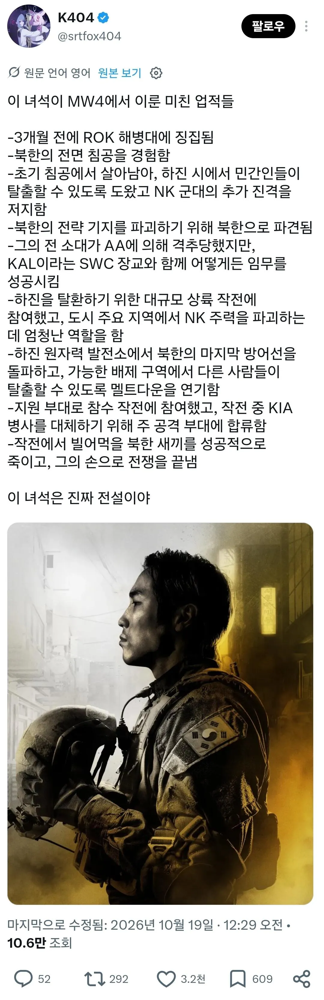

설정상 입대한지 3~4개월 정도 ㅋㅋㅋㅋ

설정상 입대한지 3~4개월 정도 ㅋㅋㅋㅋ
모던워페어 구작부터 이어지는 유규한 전통이긴 함
모던2 구작 라미레즈도 사실 업적은 얘보단 못하긴 한데 전투 수준으로 따지면
박이병보다 더 개좆같은 전장 존나 굴렀음ㅋㅋ 헬기 탄 채로 추락도 하고
애초에 라미레즈 포지션을 고대로 들고온 오마쥬 캐릭터로 보는게 정설이긴 하다더라
던이랑 같이 돌아다니는것도 그렇고
근데 생각해보니 던이 제일 대단한거 아니냐 그거이거 다 겪었는데 살아남음
고추도 크다고 외치던 던ㅜㅜ
"내 고추는 진짜 크다!"
역시 고추가 큰 던이구만
라미레즈!! 전부 다 해라!
재미는 있는데 몰입도는 많이 떨어지드라 북한이 저렇게 좋은장비로 장기간 침투? 징집 이등병이?
현실 북한에 구식장비면 너무 체급차이나서 미켈슨옹의 러시아에서 지원받앗따 라는 설정
전작에선 러시아군도 미군 위성 해킹해서 동부해안에 대규모 상륙작전을 했는데 뭐 어때 ㅋㅋ
현시점 장비로 게임 만들면,,, 팔리겠냐고 ㅜㅜㅋㅋㅋ박이병 컨트롤해서 쳐들어가는 내내
북한군 불쌍하게 보일듯 ㅜㅜㅜ,,
박이병이 최첨단으로 쳐들어가면 원작보다 더 진짜 속수무책으로 박살날텐데ㅜㅜㅜ
이어지는 라마레즈의 의지
한국군도 좀 많이 나와서 뽕좀 채워줬음 좋았을텐데 북한군 한국군 교전은 아예 묘사조차 안하더라.
콜옵의 유구한 정통임... 다른나라 전쟁인데 영국 sas 미국cia가 다 해먹음 ㅎㅎ
스토리 다 봤네
라미레즈! 전부 다해라!
요즘 입대하고 한달이면 일병달지 않나?
이등병 없어진다는 기사를 본거같은데
ㄹㅇ 자대 가면 바로 일병일텐데
사실 이미 후임 들어온 거 보면 일병 진 쯤 된 거 같던데 그냥 일병으로 하는 게 좀 더 자연스러웠을 거 같음.
하지만 일부러 이병으로 설정한 느낌.
저정도면 콜옵 다른 시리즈 주인공에도 안꿀리나 보네
방사선샤워 제대로 한 상태 아님? 업적은 끝내줬지만 자신의 삶은..
안전한오빠(고자)
K-soap
사펑의 v급이네
군인이 되기 위해서 태어난 사람일세 ...
고스트 범부행 ㅋㅋ
하사로 특진되냐
근데 특수부대 임무를 징집병이 심지어 이등병이 하는 스토리는 좀 별로였음. 그냥 한국군 이등병 미션은 대규모 전장 연출 뽕맛 미션 위주로하고 참수작전이나 북한 투입작전 이런건 걍 새 한국군 특수부대 인물 만들어서 쓰지;; 솔직히 이등병으로 심박감지기 잠입작전하고 이런거 하는데 좆도 몰입안되던데
짬처리 오지게 당함 ㅋㅋㅋㅋㅋㅋㅋㅋㅋㅋ
캠페인 중간중간에 특전사들 나오는데 한국 체계를 잘 몰라서 그런지 특전사인데 상병있고 그러던데
특전병들도 있긴 하잖어ㅋㅋ
저런 임무를 하는 애들이 아니라 글치
특전병들 전투보직 안 받은지 20년은 넘었을거 같은디...
'해병대' 이 세글자로 저 모든것이 설명된다
라이라이차차차!!
여간 기합찬 아쎄이가 아닐 수 없다
아쉬운게 후반에 좀 급전개 하드라 미션이 좀 더 많았으면 좋았을텐데
다른 얘긴데 해병대를 징집으로 봐야하나?
나라 자체는 징집이긴 하지만
해병대는 자원해서 가니깐..
'병사' 라서 징집에 해당되나
봐야지. 아무리 다들 해병대에 자원 입대했다지만 병역의 의무가 없었다면 지원하지 않았을 것임. 어차피 하는김에 빡센걸로 하자는 마음이 대부분이지.
최전방 동반입대도,,,
안가도 되는데 간게 아니라
가야해서 고른게 해병대지
전에 병신같은 국개의원이 모병제 도입이야기 하면서 해병대 봐라! 100프로 충원된다!
대한민국 모병제 가능하다 이 개소리 했음
걔네가 군대를 가야하니 그 중에 해병대를 고른거지 안가도 되는데 해병대르 갔겠냐고ㅋㅋㅋ
분대에서 쟤만 살아남나
본투비 솔져각
고증이 잘못됐어.
임무 하나 할 때마다 계급 올려 줬어야지
이등병이 혼자 세계를 구하는데 승진 좀 시켜 줘라 ㅋㅋ 업적만 보면 장군급이네
아마 실제라면 태극 무공훈장에
임무마다 최소 충무 무공훈장 또 받았을듯
이 세상에 징집된 해병은 없다 아쎄이
거의 이순신 처럼 계급 업 해줘야함 ㅋㅋㅋㅋ
라미레즈! 버거 타운을 방어해!
솔직히 다른 주인공들 불러와도
ㄹㅇ 세계대전급 위기를 막은 구작 소프나 프라이스, 알렉스 메이슨, 벨 정도를 제외하면 쟤랑 비벼지는 애들이 없음..
심지어 걔네들은 최소 특수부대 출신이고 똑같이 굴림당한 라미레즈도 2티어 특수부대인 레인저인데 쟤는 자원입대긴 해도 징집병인 일반 해병대로 저런 업적을 달성함..